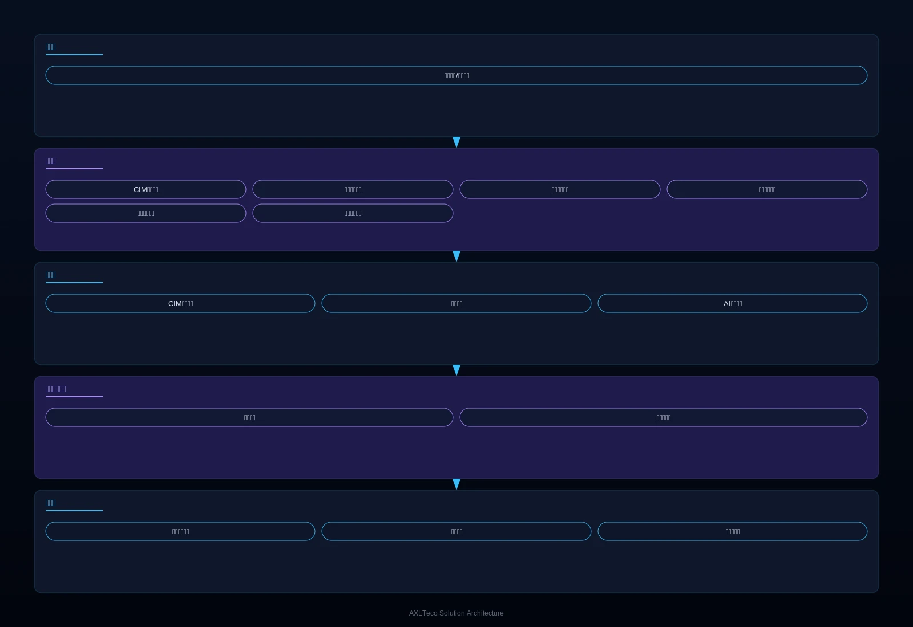

面向城市政府与运营管理部门，提供基于 CIM+BIM+GIS 三维数字底座的城市级智能化治理解决方案，解决城市数据孤岛严重、运行态势不明、公共资源配置不优的核心痛点，支撑城市精细化治理与可持续发展。
方案概述
为城市政府与运营管理部门提供基于 CIM+BIM+GIS 三维数字底座的城市级智能化治理解决方案，解决城市数据孤岛严重、运行态势不明、公共资源配置不优的问题，支撑城市精细化治理与可持续发展。
适用对象：市政府、城市运营管理中心、交通管理部门、市政部门。
- 基于数字孪生技术实现城市"虚实映射"，可在虚拟空间预演规划方案
- 平台具备弹性扩展能力，支持从单街区到全城分级建设
- 数据驱动优化公共资源配置，改善市民生活品质
收益：城市治理精细化水平提升，政务服务效率提高，公共资源配置优化，市民生活品质改善。
业务挑战
在城市治理中，客户常面临数据孤岛严重、运行态势不明、决策缺乏数据支撑的问题，亟需统一数字底座、全城感知与数据驱动的智能化治理平台。
数据孤岛严重
政务、交通、环境、能源等数据分散在不同部门，难以共享。
运行态势不明
缺乏统一的城市运行监测视图，问题发现靠经验、处置靠人工。
公共资源配置不优
交通、能源、公共服务等资源配置缺乏数据支撑，供需错配。
规划决策风险高
重大城市建设项目缺乏预演验证手段，实际建设风险大，决策成本居高不下。
三维数字底座
需要 CIM+BIM+GIS 融合的城市信息模型底座。
多源数据汇聚
需要政务、物联、互联网多源数据的治理与共享交换。
典型场景：
适用角色：城市管理者、交通工程师、环保人员、应急指挥人员。
方案架构
采用以城市信息模型（CIM）为数字底座的“城市感知网-数据平台-智能应用”三层架构，覆盖物联感知、数据治理与 AI 态势分析核心模块，支持交通、环境、市政、安防等多领域数据整合与弹性扩展。

感知层在城市道路、桥梁、管网与公园部署传感设备，边缘节点就近预处理数据，平台层汇聚政务、物联与互联网多源数据，应用层以三维数字底座与 AI 算法支撑城市态势研判与规划预演。
核心模块
CIM 数字底座
CIM+BIM+GIS 融合建模，城市“虚实映射”。
数据共享交换
多源数据汇聚治理，跨部门共享交换。
运行态势监测
AI 算法分析城市运行态势，异常自动预警。
规划仿真预演
重大规划方案在虚拟空间预演，降低建设风险。
资源配置优化
数据驱动交通、能源与公共服务供需匹配。
集成能力：
- 整合交通、环境、市政、安防等多领域数据
- 数字孪生技术预演城市规划方案
- 支持从单街区到全城弹性扩展
优势与交付
我们以数字孪生技术与城市级项目实施经验，为城市治理精细化与公共资源配置优化的提升提供支撑，并通过数字底座建设、感知网络部署、平台搭建与长期运维保障落地。
差异化优势
虚实映射预演
规划方案虚拟预演，降低建设风险。
弹性分级建设
支持从单街区到全城分级建设。
数据驱动决策
公共资源配置以数据为据，减少供需错配。
城市级实践经验
积极参与非洲城市数字化建设，积累城市级项目经验。
客户价值：城市治理精细化水平提升，政务服务效率提高，公共资源配置优化，市民生活品质改善，推动政务服务“一网通办”、城市运行“一网统管”。
实施流程
需求调研
明确治理场景、数据资源与建设边界。
数字底座建设
搭建 CIM+BIM+GIS 三维数字底座。
感知网络部署
部署物联传感、视频与环境监测设备。
数据平台搭建
多源数据汇聚、治理与共享交换。
智能应用开发
按场景开发态势监测与仿真应用。
培训交付
培训城市运营管理人员后交付。
服务保障：长期运维合作，平台持续迭代，数据安全保障。
客户案例
以下城市通过本方案相关的智能化基础设施建设项目积累了城市级实施经验。
拉各斯等城市智慧交通、安防监控与弱电智能化基础设施
背景：拉各斯等非洲城市正处于数字化建设加速期，交通、安防与弱电基础设施需求集中。
挑战：城市交通拥堵、公共安全防控与基础设施智能化水平亟待系统性提升。
方案：参与智慧交通、安防监控与弱电智能化基础设施的建设实施。
成果：积累了丰富的城市级项目实施经验，为后续智慧城市方案落地奠定基础。